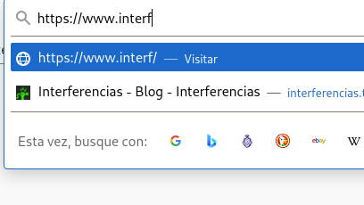
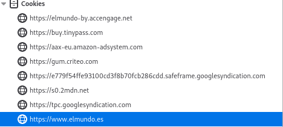

¡Oj👁 al dat👁!
Qué pasa cuando estamos en internet, a quién
le interesa, y qué podemos hacer al respecto
jjmerelo,
Interferencias ➕ LibreLabGRX ➕ UGR
jmerelo@ugr.es
Regido por protocolos
No productos
Cualquiera que acepte esos protocolos
puede usar...
o proporcionar esos
servicios
¿Dónde está ese ordenador?
Protocolo sistemas de nombres
de dominio: DNS
.es:
dominio de primer nivel
Tú no te lo puedes
comprar
Google sí
De
segundo nivel: UGR.es
Para ti... por un
precio
jj@merelo.net
Dato de carácter
personal
Privacidad (o intimidad) por omisión
Intimidad por diseño
Diseñando
la intimidad en el correo
Dónde...
se envía
se recibe
se almacena
Pero tenemos...
¡Protocolos!
Yo me los guiso, y yo me me
los como...
Thunderbird/Roundcube
Almacenamiento
local/dominio
Porque GMail nunca leería tu correo
Correo realmente seguro
Cifrado/Protonmail
www.interferencias.tech
También conocido como 188.226.185.21
¡Protocolos!
https://www.interferencias.tech
¡Protocolo!
¡Usa
Firefox!

¡Ojo al dato!
Las cookies permiten
saber dónde has estado.

Navegando
de forma anónima con Firefox
Adiós, cookies, adiós,
historial de navegación
Menú → Nueva ventana
privada
Internet no es un centro comercial
Gracias a los ...
¡Protocolos!
Usa software libre para tener tus datos
locales
Contrata tus servicios
Navega en privado
Escribe en privado